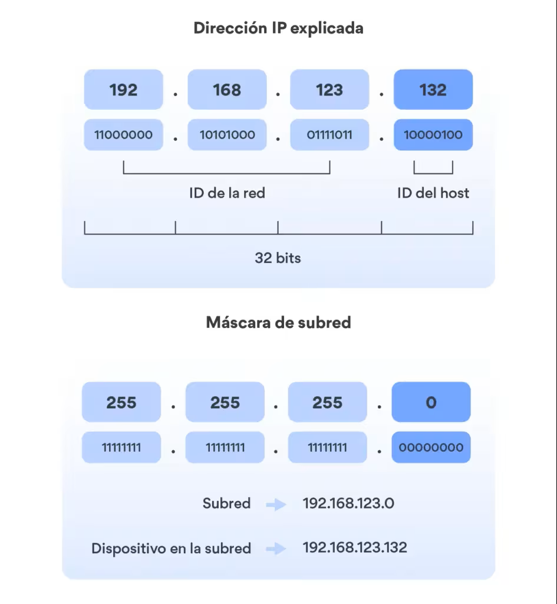
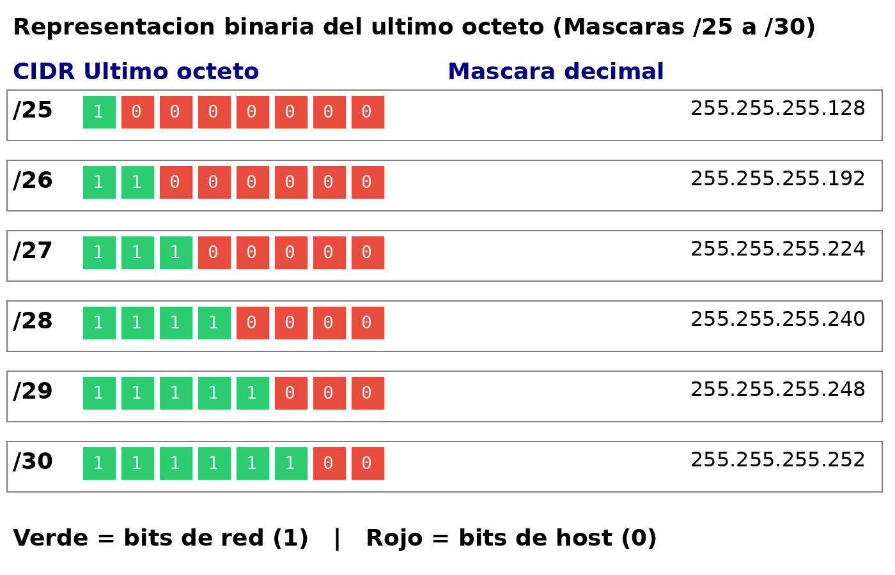
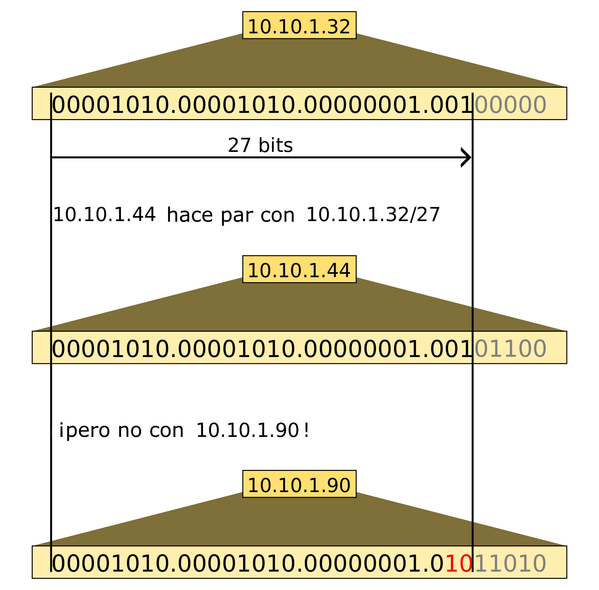

La máscara de subred y notación CIDR
En el punto anterior vimos que una dirección IP tiene dos partes: la parte de red y la parte de host. Las clases de red definían esa división de forma rígida: en una clase A siempre los primeros 8 bits son la red, en una clase C siempre los primeros 24 bits. Pero como vimos, esto genera un desperdicio enorme de direcciones.
La máscara de subred es el mecanismo que nos permite definir exactamente dónde termina la parte de red y dónde empieza la parte de host, con total flexibilidad. Es uno de los conceptos más importantes de todo el tema, y entenderlo bien es imprescindible para poder diseñar y configurar redes correctamente.
¿Qué es la máscara de subred?
La máscara de subred es un número de 32 bits que se escribe igual que una dirección IP (cuatro octetos en decimal separados por puntos) y que indica, bit a bit, qué parte de la dirección IP corresponde a la red y qué parte al host.
La regla es sencilla:
- Los bits a 1 en la máscara → corresponden a la parte de red
- Los bits a 0 en la máscara → corresponden a la parte de host
Y hay una condición fundamental: los unos siempre van antes que los ceros — nunca hay ceros entre unos en una máscara válida.


Veamos un ejemplo con la IP 192.168.1.100 y la máscara 255.255.255.0:
IP: 11000000 . 10101000 . 00000001 . 01100100
Máscara: 11111111 . 11111111 . 11111111 . 00000000
────────────────────────────────────────
[ parte de red (24 bits) ] [host ]
Los primeros 24 bits (los tres primeros octetos) son la red: 192.168.1. El último octeto es el host: 100. Por tanto este equipo está en la red 192.168.1.0 y es el host número 100 de esa red.
Notación CIDR
Escribir la máscara completa (255.255.255.0) es correcto pero engorroso. La notación CIDR (Classless Inter-Domain Routing) simplifica esto usando una barra seguida del número de bits a 1 de la máscara:
El /24 indica que los primeros 24 bits son la red (todos a 1) y los 8 restantes son el host (todos a 0). Es exactamente la misma información, mucho más compacta.
La correspondencia entre la notación CIDR y la máscara decimal para los valores más habituales:
| Notación CIDR | Máscara decimal | Bits de red | Bits de host | Hosts utilizables |
|---|---|---|---|---|
| /8 | 255.0.0.0 | 8 | 24 | 16.777.214 |
| /16 | 255.255.0.0 | 16 | 16 | 65.534 |
| /24 | 255.255.255.0 | 24 | 8 | 254 |
| /25 | 255.255.255.128 | 25 | 7 | 126 |
| /26 | 255.255.255.192 | 26 | 6 | 62 |
| /27 | 255.255.255.224 | 27 | 5 | 30 |
| /28 | 255.255.255.240 | 28 | 4 | 14 |
| /29 | 255.255.255.248 | 29 | 3 | 6 |
| /30 | 255.255.255.252 | 30 | 2 | 2 |
La fórmula de los hosts
El número de hosts utilizables siempre es 2ⁿ - 2, donde n es el número de bits de host. Se restan 2 por la dirección de red (todos los bits de host a 0) y la dirección de broadcast (todos los bits de host a 1).
Ejemplo con /24: 2⁸ - 2 = 256 - 2 = 254 hosts. Ejemplo con /25: 2⁷ - 2 = 128 - 2 = 126 hosts.
Cómo calcular la máscara en binario
Para las máscaras que no terminan en un octeto completo (las que no son /8, /16, /24), necesitamos saber convertir el número de bits a la representación decimal.
La clave es recordar los valores posicionales de un octeto:
Para /25, los 25 bits son: los 24 primeros octetos completos (255.255.255) más 1 bit adicional en el cuarto octeto:
Para /26, son 2 bits adicionales en el cuarto octeto:
Para /27, son 3 bits:


Elegir la máscara correcta según el número de equipos
Este es el concepto más importante de este punto y uno de los más relevantes para el diseño de redes reales: la máscara debe ajustarse al número de equipos que necesitamos, no a la clase de la red.
Un error muy habitual es usar siempre /24 porque es "la más común" o /8 porque se tiene una dirección de clase A. Esto puede desperdiciar miles o millones de direcciones innecesariamente.
El proceso correcto para elegir la máscara
- Determina cuántos hosts necesitas (equipos + servidores + impresoras + cualquier dispositivo con IP)
- Añade un margen de crecimiento (normalmente un 20-30% adicional)
- Encuentra la potencia de 2 inmediatamente superior al número total
- Esa potencia de 2 son los bits de host → la máscara es /32 menos esos bits
Ejemplo 1: una oficina con 50 equipos
Necesitamos alojar 50 equipos. Con margen del 20%: 50 × 1,2 = 60 equipos.
Buscamos la potencia de 2 inmediatamente superior a 60: - 2⁵ = 32 → insuficiente - 2⁶ = 64 → suficiente (64 - 2 = 62 hosts utilizables ✓)
Con 6 bits de host, la máscara es /26 (255.255.255.192). Hosts disponibles: 62. Perfecto para 50-60 equipos.
Ejemplo 2: una empresa con 300 equipos
300 equipos. Con margen del 20%: 360 equipos.
Buscamos la potencia de 2 superior a 360: - 2⁸ = 256 → insuficiente - 2⁹ = 512 → suficiente (512 - 2 = 510 hosts utilizables ✓)
Con 9 bits de host, la máscara es /23 (255.255.254.0). Hosts disponibles: 510. Adecuado para una empresa de 300 equipos con margen de crecimiento.
Ejemplo 3: el error clásico de usar /8 para 50 equipos
Imaginemos que tenemos asignada la red 10.0.0.0 (clase A) y necesitamos 50 equipos.
Si usamos la máscara por defecto de clase A (/8): - Hosts disponibles: 16.777.214 - Hosts usados: 50 - Desperdicio: 16.777.164 direcciones
La máscara correcta sería /26 (62 hosts), y la red sería 10.0.0.0/26. Así reservamos solo el espacio que necesitamos y el resto de la red 10.0.0.0/8 puede subdividirse para otras subredes o departamentos.
Tabla de referencia rápida
Esta tabla es muy útil para diseño de redes. Con ella puedes determinar rápidamente qué máscara necesitas según el número de equipos:
| Equipos necesarios | Máscara | CIDR | Hosts disponibles | Desperdicio máximo |
|---|---|---|---|---|
| 1 - 2 | 255.255.255.252 | /30 | 2 | 0 |
| 3 - 6 | 255.255.255.248 | /29 | 6 | 3 |
| 7 - 14 | 255.255.255.240 | /28 | 14 | 7 |
| 15 - 30 | 255.255.255.224 | /27 | 30 | 15 |
| 31 - 62 | 255.255.255.192 | /26 | 62 | 31 |
| 63 - 126 | 255.255.255.128 | /25 | 126 | 63 |
| 127 - 254 | 255.255.255.0 | /24 | 254 | 127 |
| 255 - 510 | 255.255.254.0 | /23 | 510 | 255 |
| 511 - 1022 | 255.255.252.0 | /22 | 1022 | 511 |
| 1023 - 2046 | 255.255.248.0 | /21 | 2046 | 1023 |
La operación AND: cómo la red detecta si un destino es local
Hay una operación matemática que usan los equipos para determinar si una dirección de destino está en su misma red o hay que enviar el paquete al router: la operación AND bit a bit entre la IP y la máscara.
IP del equipo: 192.168.1.100 → 11000000.10101000.00000001.01100100
Máscara /24: 255.255.255.0 → 11111111.11111111.11111111.00000000
AND resultado: 192.168.1.0 → 11000000.10101000.00000001.00000000
↑ Esta es la dirección de RED
-
Si aplico el mismo AND a la IP de destino y obtengo el mismo resultado, el destino está en mi red → envío directamente.
-
Si el resultado es diferente, el destino está en otra red → envío al router (puerta de enlace).


No hace falta hacer el AND manualmente
Los equipos hacen esta operación automáticamente en microsegundos. Nosotros la entendemos para saber qué ocurre internamente, pero en la práctica usaremos herramientas como ipcalc para calcular direcciones de red, rangos y broadcasts.
Actividad en clase
🖥️ Actividad conjunta: elige la máscara correcta
Para cada escenario, indica qué máscara (CIDR y decimal) usarías y cuántos hosts quedan disponibles. Justifica por qué no usas la máscara por defecto de la clase.
Escenario 1: Departamento de desarrollo con 12 programadores. Red: 192.168.10.0
Escenario 2: Empresa mediana con 180 empleados y previsión de crecer hasta 220 en 2 años. Red: 172.20.0.0
Escenario 3: Enlace punto a punto entre dos routers (solo necesitan 2 IPs). Red: 10.0.0.0
Escenario 4: Red de servidores con 6 servidores físicos + 2 de reserva. Red: 192.168.100.0
Solución
Escenario 1:
- 12 programadores + margen → necesitamos ~15-16 hosts.
- 2⁴ = 16 hosts totales → 14 utilizables → /28 (255.255.255.240)
- Red:
192.168.10.0/28, hosts:192.168.10.1–192.168.10.14, broadcast:192.168.10.15 - La máscara por defecto /24 daría 254 hosts → 240 desperdiciados innecesariamente.
Escenario 2:
- Previsión de 220 equipos → necesitamos al menos 220 hosts.
- 2⁷ = 128 → insuficiente. 2⁸ = 256 → 254 hosts → insuficiente también (220 < 254 pero sin margen)
- 2⁹ = 512 → 510 hosts → suficiente con margen → /23 (255.255.254.0)
- Red:
172.20.0.0/23, hosts:172.20.0.1–172.20.1.254, broadcast:172.20.1.255 - La máscara por defecto /16 daría 65.534 hosts → enorme desperdicio.
Escenario 3:
- Solo 2 IPs → 2 hosts → 2² = 4, menos 2 = 2 → /30 (255.255.255.252)
- Red:
10.0.0.0/30, hosts:10.0.0.1y10.0.0.2, broadcast:10.0.0.3 - La /30 es la máscara estándar para enlaces punto a punto entre routers.
Escenario 4:
- 6 + 2 reserva = 8 servidores → 2³ = 8 hosts totales → 6 utilizables → insuficiente.
- 2⁴ = 16 → 14 hosts utilizables → suficiente → /28 (255.255.255.240)
- Red:
192.168.100.0/28, hosts:192.168.100.1–192.168.100.14 - La /24 daría 254 hosts para solo 8 servidores → desperdicio injustificado.